AI + Agriculture Project
An AI-powered web application that detects tomato leaf diseases from images and provides detailed explanations and treatment recommendations for farmers.
Farmers often struggle to identify plant diseases accurately. This project uses a Convolutional Neural Network (CNN) to analyze tomato leaf images and instantly predict diseases.
The system also provides disease descriptions, treatment recommendations, and stores diagnosis history so users can track past detections.
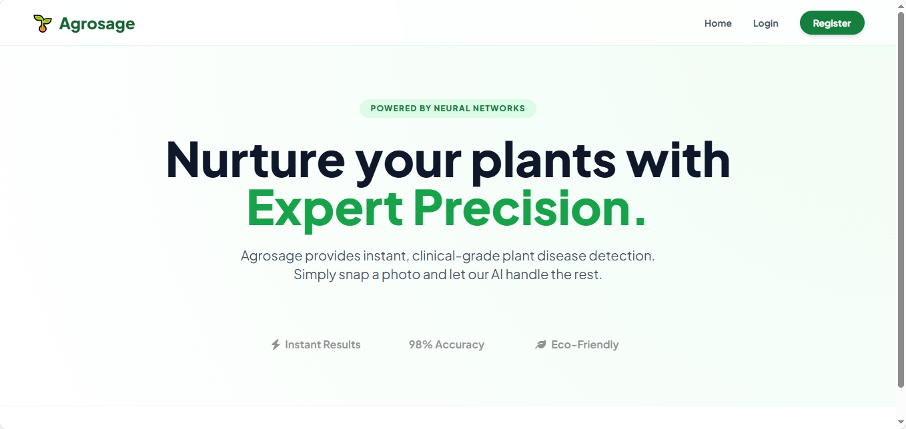
Landing page with Login and Sign Up options.
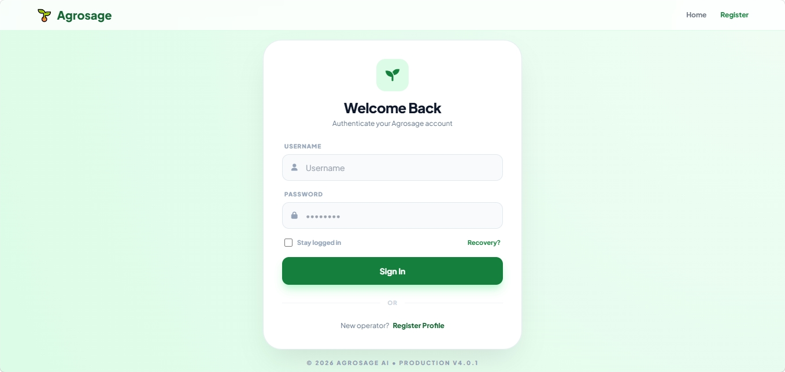
Secure user authentication.
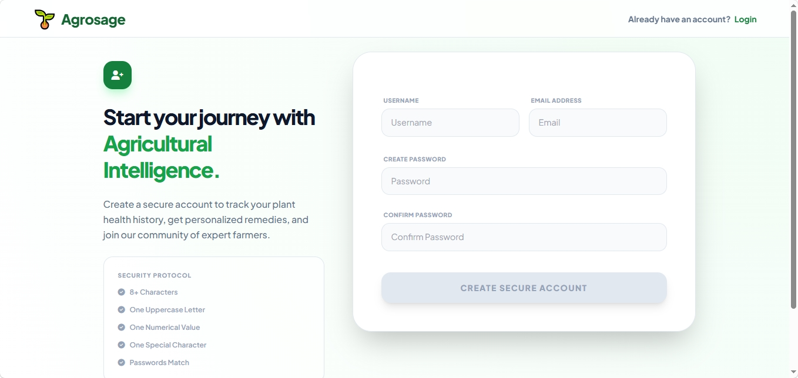
New users can register easily.
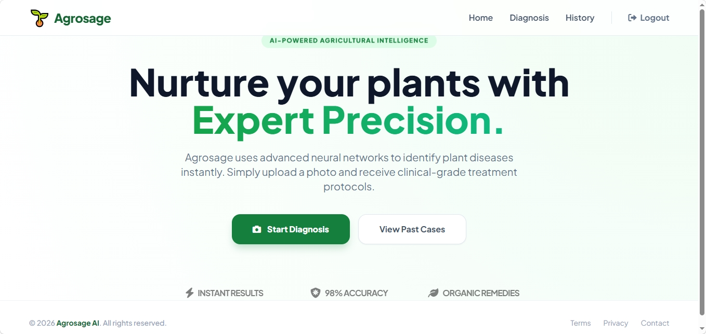
Main dashboard after login.
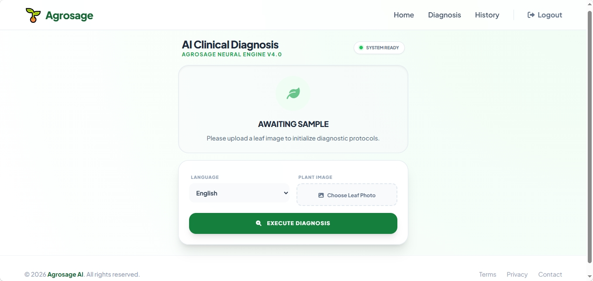
Upload a leaf image for analysis.
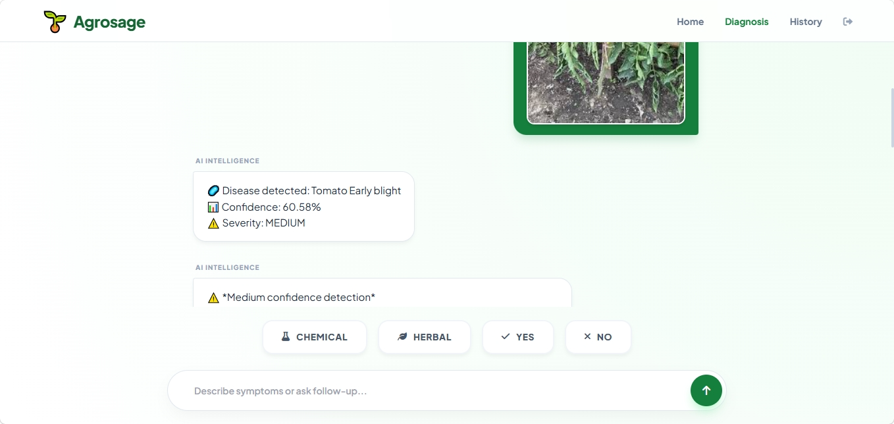
Displays disease name, confidence, and details.
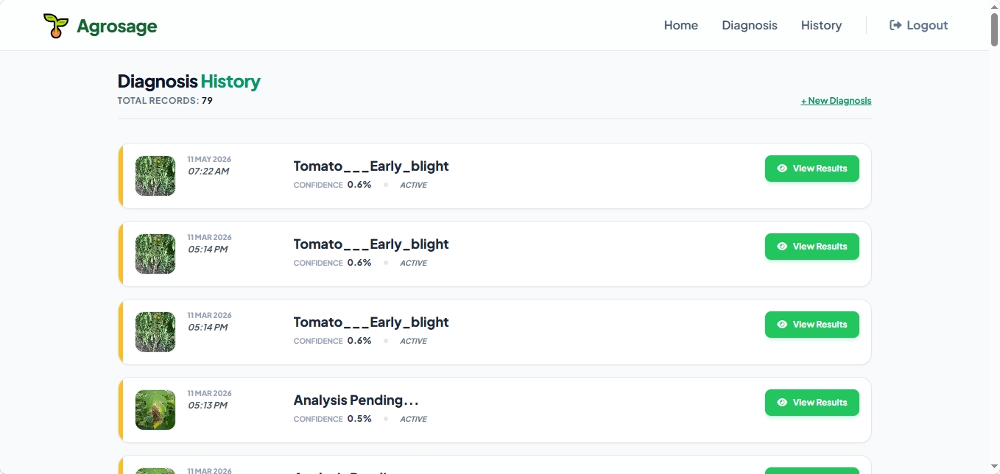
View all previous diagnoses.
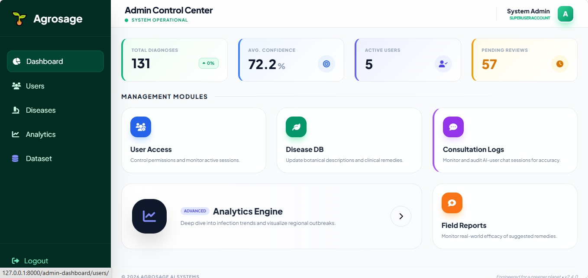
Overview of users, diseases, and diagnoses.
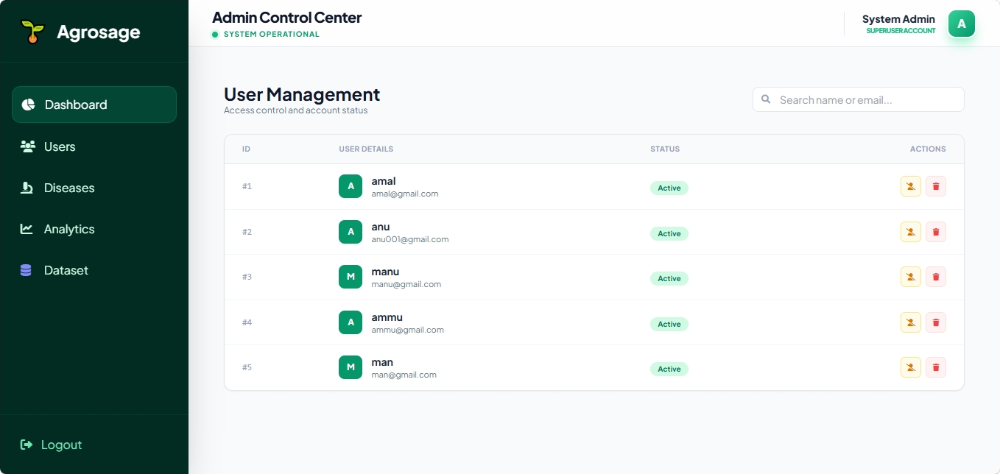
User Management.
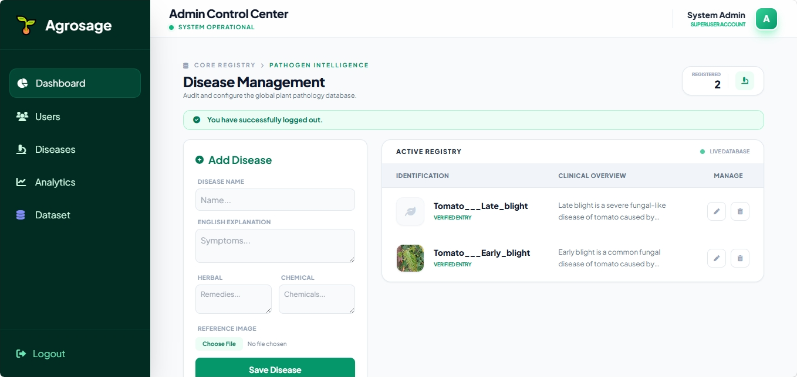
Add and update disease and their remedy information.
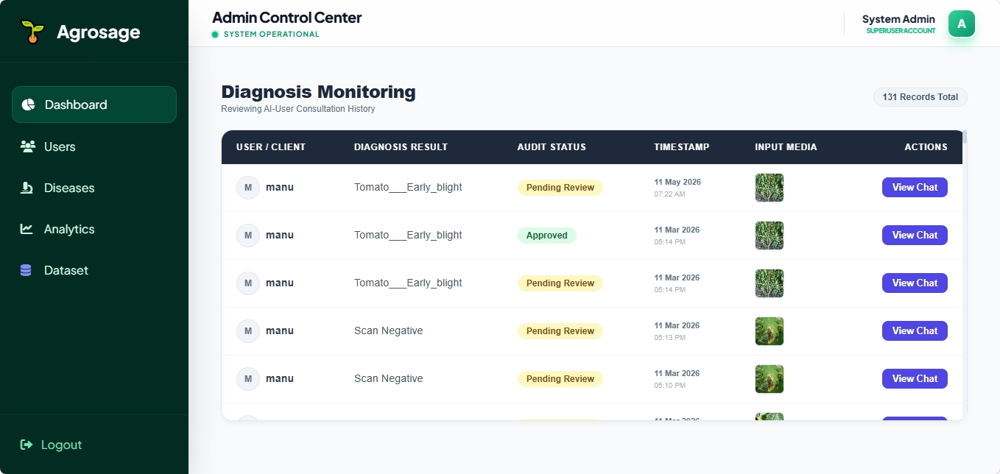
Diagnosis monitoring.
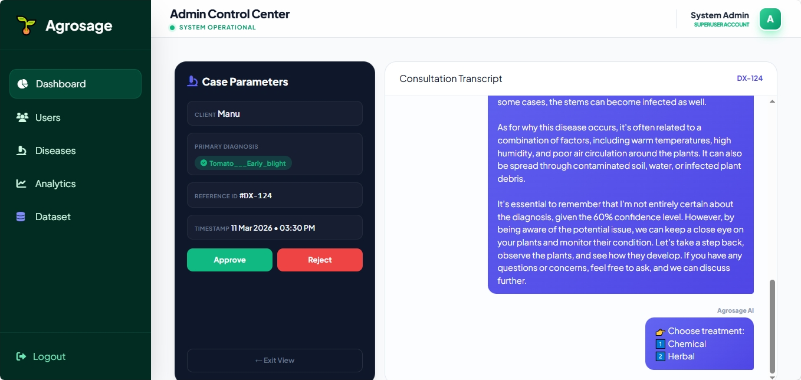
User chat.
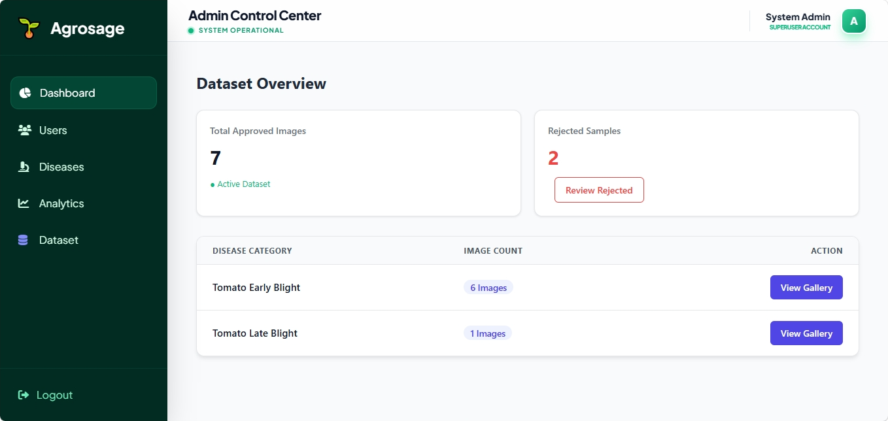
Dataset collection for future training.
Project Impact
Helping farmers diagnose crop diseases instantly and take corrective action before major yield loss occurs.